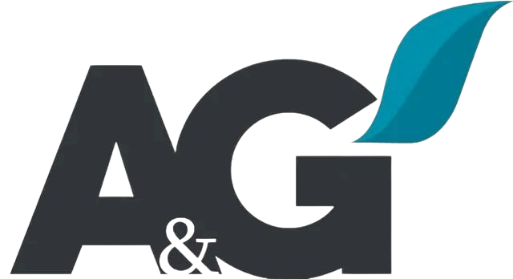
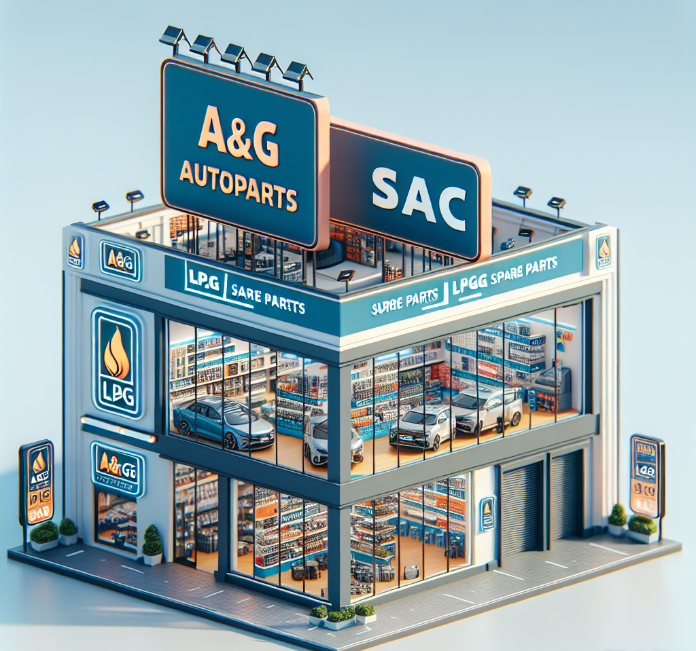
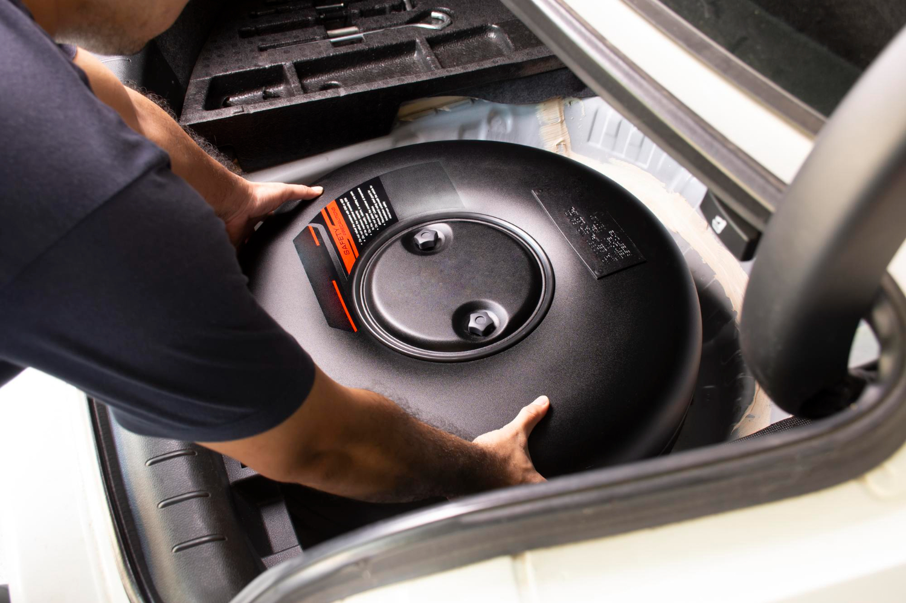
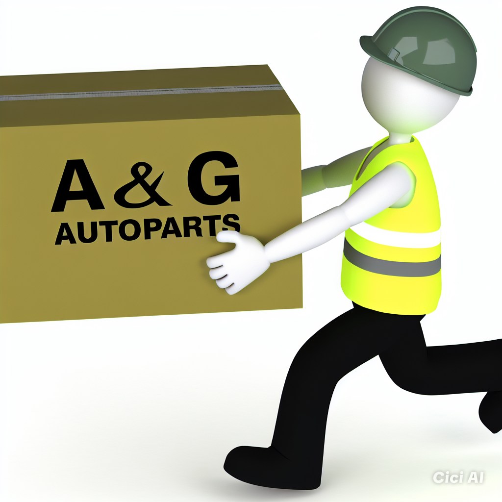
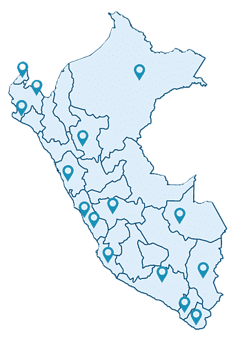
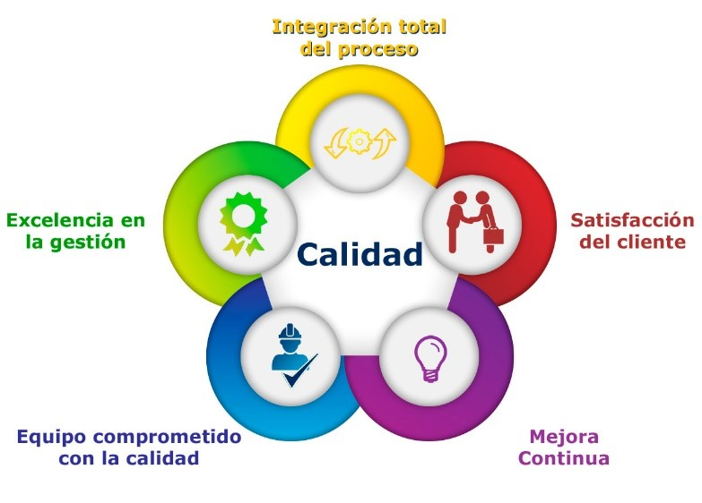

Quienes somos
En A&G Autopartes somos una empresa dedicada a la venta de repuestos de GLP y GNV, así como repuestos para vehículos de todo tipo. Nos destacamos por ofrecer productos de alta calidad y un servicio al cliente excepcional. Con un compromiso inquebrantable con la excelencia, nos esforzamos por satisfacer las necesidades de nuestros clientes y garantizar la seguridad y rendimiento de sus vehículos. Nuestro equipo altamente capacitado está comprometido en brindar asesoramiento especializado y una experiencia de compra única para cada cliente.
Nuestra Historia
Somos A&G Autoparts SAC, especializados en la venta de partes y equipos para vehículos GLP y GNV, así como para todo tipo de automóviles. Fundada en 2015, nos hemos dedicado a ofrecer soluciones de calidad y servicio excepcional a nuestros clientes.
Nuestra Misión
La empresa A&G Autopartes se dedica a proporcionar repuestos de GLP y GNV, así como repuestos para vehículos de todo tipo, con el compromiso de garantizar la seguridad y rendimiento de los automóviles. Nuestra misión es ser el proveedor líder en el mercado de repuestos, ofreciendo productos de calidad y confiabilidad para satisfacer las necesidades de nuestros clientes y contribuir al óptimo funcionamiento de sus vehículos.
Nuestra Visión
Nuestra visión en A&G Autopartes es ser reconocidos como un referente en la industria automotriz, siendo la primera opción para los propietarios de vehículos que buscan repuestos de GLP y GNV de alta calidad. Aspiramos a expandir nuestra presencia a nivel nacional e internacional, manteniendo altos estándares de excelencia en nuestros productos y servicios para seguir siendo líderes en el mercado y contribuir al desarrollo sostenible del sector automotriz.
Objetivos
Nuestro principal objetivo en A&G Autoparts SAC es convertirnos en un referente a nivel nacional en la venta de repuestos para GLP, GNV y vehículos de todo tipo. Nos enfocamos en expandir nuestra presencia para que nos reconozcan en todo el país. ¡Es un objetivo ambicioso que busca consolidar nuestra marca y los servicios que ofrecemos!
Compromiso con la calidad i al servicio
En A&G Autopartes, nuestro compromiso con la calidad y el servicio al cliente es primordial. Nos esforzamos por ofrecer productos de alta calidad al seleccionar cuidadosamente proveedores confiables y garantizar que cada repuesto de GLP, GNV y para vehículos cumpla con los más altos estándares de seguridad y rendimiento. Además, nuestro equipo está capacitado para brindar un servicio excepcional, asesorando a nuestros clientes en la selección de los repuestos adecuados, brindando atención personalizada y asegurando una experiencia de compra satisfactoria. Estamos comprometidos a mantener la excelencia en cada aspecto de nuestro negocio para garantizar la plena satisfacción de quienes confían en nuestros productos y servicios.
